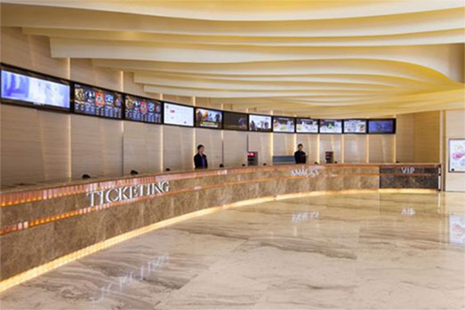

home > 이용안내 > 편의시설
편의시설
부평구문화재단에서는 여러분들의 편안한 이용을 위해
다음의 서비스들을 제공하고 있습니다.
-

- 매표소
- 로비 정 중앙에 위치하여 3개의 창구로 나뉘어져 있고, 기획사의 편의에 맞게 창구 이용이 가능합니다. 기획사에 맞는 창구 이용 시 혼잡함을 방지할 수 있어 더욱 편리하게 티켓 수령이 가능합니다.
-
- 물품보관소
- 관객의 소지품과 외투 등을 편안하게 보관할 수 있도록 물품보관이 가능한 물품보관소가 운영되고 있으며, 물품보관 후 미수령 물품은 하우스매니저가 보관하되, 1개월이 지나면 아름다운 가게에 기부됩니다.
-
- 화장실
- 화장실은 각 층에 위치하고 있습니다. 휠체어를 사용하시는 장애우를 위한 화장실은 건물 1층에 남녀 화장실에 각각 설치되어 있습니다.
-
- 휴게실
- 건물 1층 우측에 휴게실이 위치되어 있습니다 캔음료 자판기와 커피자판기를 함께 운영하고 있으며, 자판기는 연중무휴로 운영되고 있습니다. 음식을 가져오신 경우 나가실 때 꼭 치워주시기 바랍니다.
-
- 야외데크
- 카페 밖으로 마련된 야외데크는 편하게 쉴 수 있는 공간으로 아트센터의 풍경을 담아 음료를 마시며 여유를 즐길 수 있습니다. (우천 시에는 이용이 불가합니다.)
-
- 오페라글라스 (망원경)
- 원거리 객석 관객 서비스 강화를 위해 오페라글라스(망원경)을 대여하고 있습니다. 주의사항을 숙지해주시기 바랍니다.
- 1. 이용시간 : 공연시작 1시간 전부터 공연종료 후 30분까지
- 2. 준비물품 : 대여료 4,000원, 신분증